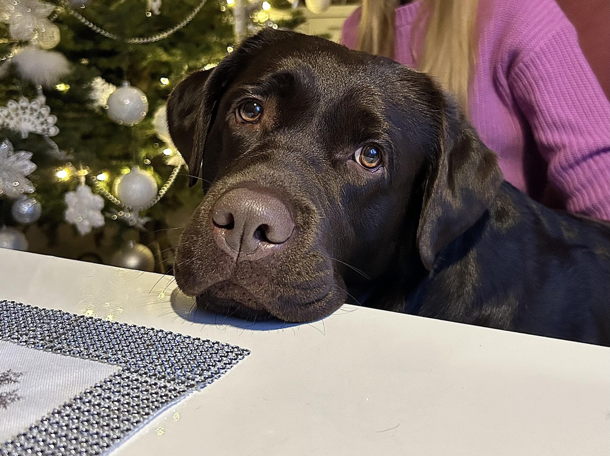

O rasie
Labrador retriever to jedna z najpopularniejszych ras psów na świecie, znana ze swojego przyjaznego, łagodnego charakteru i inteligencji. Labradory są wyjątkowo towarzyskie i lojalne, co sprawia, że świetnie sprawdzają się jako psy rodzinne oraz towarzysze osób aktywnych. Są również bardzo chętne do nauki, co czyni je idealnymi do pracy w roli psów przewodników, ratowników czy psów terapeutycznych.
Labradory mają krótką, gęstą sierść w kolorze czarnym, żółtym lub czekoladowym, a ich średni rozmiar i mocna budowa ciała sprawiają, że są wytrzymałe i energiczne. Lubią pływać i potrzebują regularnej aktywności fizycznej, co jest kluczowe dla utrzymania ich zdrowia i dobrego samopoczucia.
Galeria
Labuś podczas zabawy

Labuś odpoczywający w domu